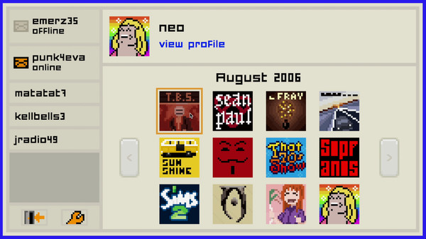

Disclaimer
Obviously none of these characters are real, and they aren't real people you are chatting with. These two games are experiences ran by AI and prewritten messages, even though there are multiple choices and endings in both games.
Obviously none of these characters are real, and they aren't real people you are chatting with. These two games are experiences ran by AI and prewritten messages, even though there are multiple choices and endings in both games.
There's 6 characters in the 'Emily is Away' experience. The main characters are Emily (emerly35), who is your highschool crush, and a while later in your game you soon run into issues after befriending Emma (emmagem64).
There's also Brad (BradDarko23) and Travis (TravisDaMan); one of these guys end up becoming Emily's boyfriend, depending on the outcome of one of your early core options in the game. And, lastly, Julie (xXJules21Xx), Emily's best friend, and Mike (ExciteMike), your male best friend.
There's only 3 characters of mention in 'Emily is Away Too.' There's Emily (emerz35), once again making an appearance. And, there's Evelyn (punk4eva), your new good friend who clearly loves punk music.
Just as before, both these females might just take some romantic interest in you, if you play your cards right. Lastly, there's Steve (swanky87), Evelyn and Julie's ex-boyfriend.
